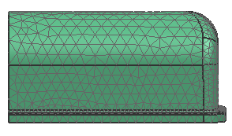

Mesh the part
Mesh the part with Transition Element Size turned off. In the next step you will turn it back on to demonstrate its effect on the resulting mesh.
 3D Tetrahedral (Mesh group)
3D Tetrahedral (Mesh group)
-
 the polygon body
the polygon body
-
 Automatic Element Size
Automatic Element Size -
 Transition Element Size
Transition Element Size
-
OK
 Simulation Navigator
Simulation Navigator
-
 Mesh Controls (deselect)
Mesh Controls (deselect)
